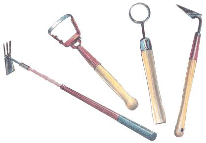
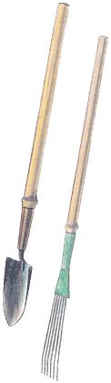
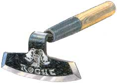
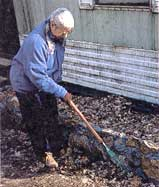
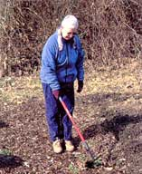

Get A Handle On It
The past few years have seen an addition to the family of gardening tools. Combining long handles and well- made heads, these new tools make any gardening tasks easier, yet surprisingly few gardeners are aware they exist. Brook Elliot tells us what’s available and where to find them in this special report.
By Brook Elliott
June/July 2001
Tools to help you reach beyond your grasp
by Brook Elliott - Illustrations by Will Shelton
A tool is a device that extends the human body and multiplies any force exerted. Archimedes' lever was an extension of his arm that increased the lifting force applied to one end. The same is true for garden tools.
Whatever their shape or purpose, garden tools extend some part of your body and multiply the strength applied. For instance, if you squeeze your fingers together and cup your hand slightly, you have formed a spade to dig and scrape. Forge that spade from stone or metal and you can move much more dirt with the same effort. Put a handle on it, and you leverage that effort several fold. By this point, you have a trowel.
Unfortunately, the handles on most trowels, and on most gardening tools intended for one-handed use, are woefully short. You wind up doing the work instead of the tool doing it for you. I recently witnessed this inefficiency in person, watching a neighbor plant a bed of flower bulbs. For each bulb, he had to forcefully stab the trowel blade into the earth, then twist it several times to create a hole for the bulb. The poor guy was breaking a sweat planting flowers! A longer handle would have made the job a snap.
One-handed gardening tools (as opposed to those, like a shovel, that require two hands to operate) fall into five categories: digging blades (trowels); cutting and scraping blades (hoes and weeders); forks and cultivators; rakes; and multipurpose tools that combine two or more functions. Sometimes the standard six- or seven-inch handle is sufficient for the job at hand, but a longer handle is often preferable. Long-handled tools range in length from about ten to 24 inches; anything more than 32 inches long is difficult to use with one hand. Among the many advantages to long-handled tools:
Power transference A long handle acts as a lever, transferring your energy to the tool and multiplying the effect so you can do more work with less effort. This is not a new idea - the Native-American digging stick is an application of this principle.
Balance A longer handle counterbalances the weight of the tool head, making it less fatiguing to use, especially over long periods.
Reach Long-handled tools extend the length of your reach, which has many advantages. Obviously, you can reach further without moving. But the longer reach also lets you forage around in areas that might be otherwise difficult to manage. For instance, with the two-foot wire rake from Garden Tools of Maine, you can easily reach deep into a perennial bed to clean out debris, which is nearly impossible to do with a full-length rake. This application is especially practical when cleaning out beds of thorny plants, such as roses and berries.
Control The advantages of long-handled tools might lead you to believe that two-hand-use tools are the way to go. What you get from these in terms of leverage, however, you sacrifice in control. For example, we use a one-handed combination hoe/fork for weeding and cultivating beds. With a full-length version we'd be all over the lot, but the one-handed tool allows for much greater precision. In addition, we find it less tiring to use. We especially like the Corona mattock/fork version from A.M. Leonard, which has an extendible handle. By adjusting the length we can work standing up, but still have the control inherent in one-handed tools. Or we can shorten the handle for even better control in tight spaces.
The metal handles on these tools extend from 18 to 32 inches with the twist of a wrist. There are five heads available: wire rake; mattock/fork combination; rake; trowel; and three-tined cultivator. Each has a cushioned, nonslip grip and a metal hang ring.
Safety It's all too easy to damage plants using unwieldy full-length tools. Stirrup hoes, for instance, are notorious for overcutting and for destroying the roots of tender vegetation. However, with the one-handed version from Peaceful Valley Farm Supply, I can weed and aerate the soil with no danger to my plants. This hoe has a small stirrup blade measuring only three inches across.
For weeding in tight spaces, nothing compares to the small circle hoe, also from Peaceful Valley, with its 11-inch-long, thick hardwood handle and two-inch diameter blade. It's designed to be used with a pulling action, so only the bottom third of the blade is sharpened. Having an accident with this hoe almost requires deliberate effort.
Wonderful as they are, long-handled tools can be difficult to find. The few sold by most garden supply stores are often lower-quality tools designed for kids, not for serious gardening tasks, though stores sometimes carry a few cheaply made tools with hollow-metal handles and stamped (as opposed to forged) heads. One exception is the line of Lady Gardener-tools carried by many nurseries and garden supply departments (look for the display rack). This line includes 12 heads, each with a 12- to 14-inch ferruled hardwood handle and leather hang cord. We especially like the finely tapered triangle hoe, ideal for weeding the cracks between paving stones and digging furrows for small seeds.
...long-handled tools will benefit many gardeners - the young and the elderly, and/or handicapped who have difficulty reaching the earth with a standard tool...
This line is clearly marketed toward women, who often find long-handled gardening tools easier to work with than standard tools. But long-handled tools will benefit many gardeners. "We developed these tools with two markets in mind; the young and the elderly, and/or handicapped who have difficulty reaching the earth with a standard tool," says Peter Sonderegger, president of Garden Tools of Maine. Arm's Length, their long-handled line, is especially useful to anyone who gardens from a sitting position. Each tool comes with a two-foot ash handle and leather hang cord. There are five standard, forged heads available: three-tined cultivator, trowel, wire rake, dandelion weeder and fork. All heads can be ordered with the long handle.
Hoes, the tool most commonly used by home gardeners and farmers alike, constitute the largest category of long-handled garden tools. Although standard hoe blades range two to five inches in width, hoes come in a bewildering array of blade sizes and shapes for general- and special-purpose use.
The newest hoe on the scene is the Rogue hand hoe from Prohoe, available through Baker Creek Heirloom Seeds. Basically a one-handed version of their model 70G, the blade is forged from recycled disk hoe blades sharpened on three sides. This hoe does not need to be filed before first use and can usually make it through the season of heavy use without resharpening. The Rogue sports a 12-inch ferruled hardwood handle and its blade is bent slightly inward, which reduces fatigue. Prohoe, by the way, enjoys a high reputation among farmers - the company deserves better recognition by home gardeners and small market growers.
When it comes to elegance, nothing holds a candle to traditional Japanese garden tools, and the hoes are no exception. A typical Japanese blade is slightly cup-shaped and tapers outward from the handle. Hida Tool Co. has perhaps the broadest line of traditional Japanese tools. Among those intended for one-handed use are eight designs the company classifies as hoes. Two of these, however, are actually fork-like cultivators, and two combine hoe blades with other tools.
Each hoe comes with a 15-inch oak handle and includes a metal wedge. We particularly like the three-inch-wide window hoe, designed to keep soil from building up behind the blade. Hida also offers a heavy-duty, three-tined forged cultivator mounted on a 12-inch oak handle, as well as a selection of weeders and scrapers. The V-shaped scraper is particularly useful. Its sharpened, trowel-like blade is mounted at right angles to the 16-inch handle, which makes it ideal for weeding in tight corners and between stones. It also serves as an off-set trowel, perfect for planting bulbs and similar tasks.
Whatever gardening tool you are looking for, you can probably find it with a long handle.
If you're willing to search a bit, you'll find most tools are available with a long handle. Peaceful Valley Farm Supply, for instance, has long-handled versions in nine different categories, including forks, rakes, hoes and weeders. Ironically, they do not have a trowel. "We agree with your premise that longer-handled trowels would be easier to use and less fatiguing," concludes technical support specialist Lisa Spang. "But it seems that the purpose of that tool would be better accomplished with a spade or hoe."
Maybe so. But given the diversity of long-handled trowels available, it would seem that many gardeners disagree.
Source Guide
A.M. LEONARD
PO Box 816
Piqua, OH 45356
(417) 924-8917
www.amleo.com
BAKER CREEK HEIRLOOM SEEDS
2278 Baker Creek Rd.
Mansfield, MO 65704
www.rareseeds.com
BURRELL'S BETTER SEED
PO Box 150
Rocky Ford, CO 81067
(800) 443-5512
burrellseeds@hotmail.com
GARDEN TOOLS OF MAINE
RR #2 Box 2208
E. Holden, ME 04429
(800) 871-8158
www.gardentoolsofmaine.com
HIDA TOOL & HARDWARE
1333 San Pablo Ave.
Berkeley, CA 94702
www.hidatool.com
LEE VALLEY TOOLS
PO Box 1780
Ogdensburg, NY 13669
www.leevalley.com
PEACEFUL VALLE Y
(800) 536-5450
www.groworganic.com
FARM SUPPLY
PO Box 6900
Grass Valley, CA 95945
PROHOE
PO Box 87
Munden, KS 66959
www.prohoe.com
|
Left to right: Corona mattock/fork from A.M. Leonard; stirrup hoe and circle hoe from Peaceful Valley; and triangle hoe from Lady Gardener. |
 Garden Tools of Maine - trowel and wire rake. |
 The Rogue hoe from Prohoe |
|
 Traditional Japanese tools from Hida tool Co. (left to right): Window hoe; V-shaped scraper and three-tined cultivator. |
 |
 |
|
 |
|
|